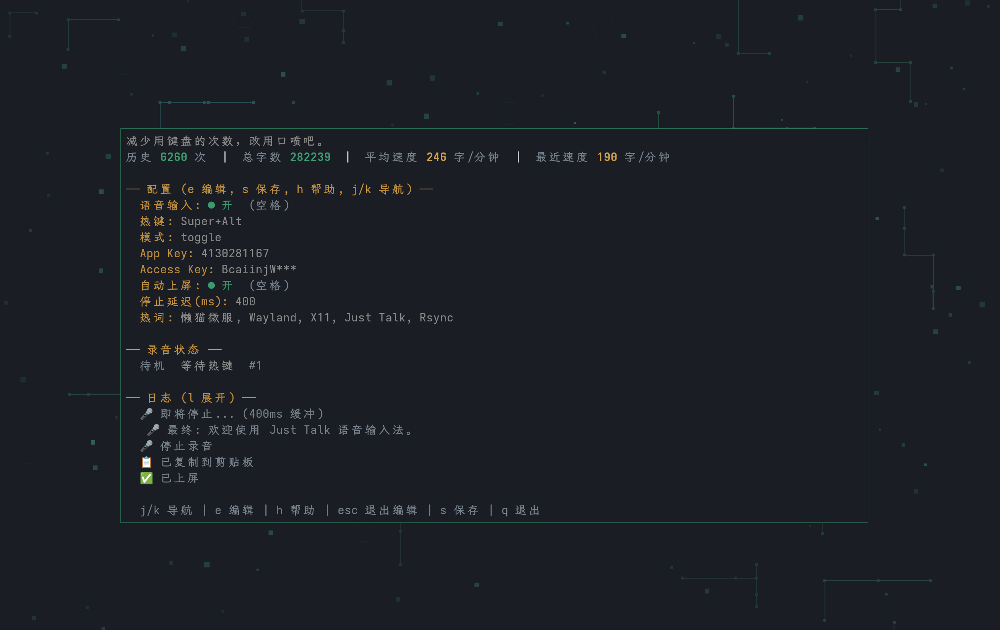

01
在你工作的地方说
全局快捷键随时唤起，支持按住说话和按一下切换。文字自动复制，也可以直接上屏到当前输入框。
Alt+Super说话的开关
想法不必排队等键盘。
按下快捷键，直接说。Just Talk 把你的声音
变成文字，送到正在使用的输入框。
把时间留给思考，把输入交给声音。
不用切换应用，不用打断思路。
从一句灵感到一段长文，输入可以更自然。
全局快捷键随时唤起，支持按住说话和按一下切换。文字自动复制，也可以直接上屏到当前输入框。
豆包大模型流式识别，边说边处理。添加项目名、人名和专业术语作为热词，让表达更贴近你的日常。
录音持续缓存在内存中。识别失败后保留原音频，等你准备好，按 R 重试同一段录音。
用熟悉的全局快捷键唤起录音。
录音胶囊提示当前状态，流式识别同步进行。
识别完成后复制或直接上屏，接着做你的事。

支持 Wayland 与 X11。
适配你的桌面工作流。
原生录音与全局快捷键。
Intel、Apple Silicon 均支持。
原生录音、剪贴板和状态胶囊。
无需额外安装录音工具。
下载适合你桌面的版本，配置 ASR 密钥，
让 Just Talk 成为你的日常输入方式。
# 检查环境与配置
./just-talk --doctor
# 启动配置界面
./just-talk语音识别使用豆包 ASR 服务，需配置自己的 App Key 和 Access Key。录音音频会发送到该服务；失败录音只缓存在内存中，退出程序后不保留。